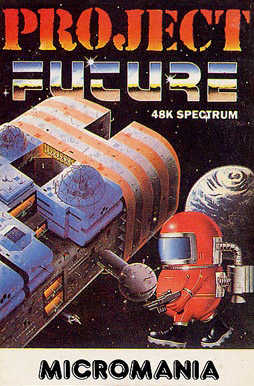
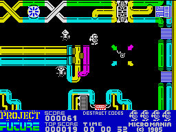

Project Future


{kind=link}

| Publisher: | Micromania |
| Price: | £6.95 |
| Year: | 1985 |
| Source: | CRASH, Issue 14 |

Your mission is to teleport aboard and activate the Self Destruct System of the dreaded SS Future, a huge labyrinth of a space ship covering 256 screens. The trouble with the SS Future is that it is hurtling uncontrollably towards the earth on a collision course. You play Space Cadet Farley, a neat looking sprite of the future, and you must collect all the destruct codes that are hidden in the ship.

Transporte
The SS Future consists of five decks of increasingly complex, interlocked mazes and is filled with numerous defence droids whose prime task is to prevent you from living too long. To help you the Space College have equipped you with a powerful laser and occasionally you might discover an armour-plated suit into which you can dive and which protects you from the effects of the droids for four screens. The various decks are reached via a teleport system, and depending on which direction you enter the device, you will be transported to another level. There is also a scooter which looks a bit like a C5.2, and speeds up movement around the decks, though you still have to watch out for the nasties when using it. It too lasts for only four screens. The destruct codes are blocks which are collected by running over them. Once all the codes are collected it’s time to find the destruct button and save Earth yet again.
CRITICISM
‘Before giving my opinion on the game I would like to say that on the inlay there is no reason given for destroying the ship; is one needed? (Note: the Earth collision is mentioned in the separate PR — Ed). Project Future is a large maze game, a sort of Sabre Wulf in space. I say this both of style and quality. The game has several features such as protective suits, space scooters etc. The game has good graphics and is full of colour. It’s addictive because you can soon obtain a destruct code, but collecting the lot takes quite a while (not yet achieved by the way)! After each game I wanted to play more and the inter-game pause became annoying. Another frustration was that ‘up’ and ‘down’ on the Kempston were reversed. The maze scenario may not be highly original but if it is done well then it should receive credit. In fact the maze from ancient days has been a subject of fascination and innovation. So long may it live.’
‘Maze games don’t seem to be so common now as they used to be. A wider approach to the maze idea has been given to this game in that each screen is very detailed and has its own playing area designated to it. The thought of wandering around a huge, viciously inhabited space ship to collect eight destruct codes is quite daunting. I found it was very easy to get lost in Project Future, so a map seems essential. The graphics are well animated and ‘alien’ like, and of a nice size. There’s some indefinable quality about this game that makes you want to play on and on — perhaps this is what many games lack these days. Playability is an essential ingredient of maze-type games, otherwise you quickly lose interest. I like the way you can pick up an extra man, not just by scoring a certain amount, but the extra men are dotted about waiting for you to find them — and you certainly need them. There are a number of features to discover, like the alcoves you can duck into to avoid the nasties. Sound is very good indeed, well used and not over-used. A good idea, well implemented.’
‘Micromania haven’t released a game for what seems ages, but it was worth the wait. The graphics on this game are excellent and colour is used so as to create a very effective game. Project Future is a very good maze shoot em up, a bit like a ‘Berserk’ game but with a purpose. Sound is used quite well with the usual accompaniment of noises you’d expect from this sort of game. Picking up a gun on your travels will re-energise your fire power. The only disadvantage of doing this is that it prevents you from wearing the protective power suit. The overall feel is one of a well thought out game that has a lot to offer. I can’t wait for the next one from Micromania.’
COMMENTS
| Control keys: | N/M left/right, A/Z up/down, remaining bottom row to fire |
| Joystick: | Kempston, AGF, Protek, Sinclair2, Ram Turbo |
| Keyboard play: | Very responsive, eight-directional movement |
| Use of colour: | Excellent |
| Graphics: | Very good, smooth and detailed, good size |
| Sound: | Excellent and tuneful |
| Skill levels: | 1 |
| Lives: | 5 |
| Screens: | 256 |
| General rating: | Very good, addictive and everything works really well. |
| Use of computer: | 88% |
| Graphics: | 92% |
| Playability: | 92% |
| Getting started: | 86% |
| Addictive qualities: | 91% |
| Value for money: | 89% |
| Overall: | 90% |